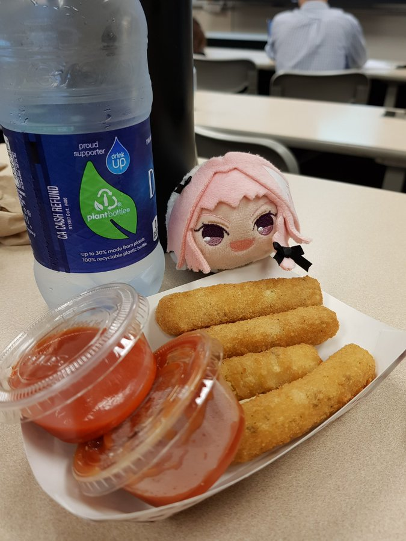

Sigma Sticks!

The favorite stick shaped snack of a true sigma!(Well maybe there is another thing...UwU)
Ingredients!!!
- 2 eggs
- 2 cups of "milk"
- 1 1/2 cups of bread crumbs
- 10 egg roll wrappers
- 10 mozzarella string cheese sticks
- Olive oil for frying
Instructions!
- Beat the eggs in a mixing bowl. Whisk in the milk, then set aside. Place the bread crumbs into a plastic bag, and set aside.
- Separate and place an egg roll wrapper onto your work surface with one of the tips pointed towards you. Moisten the two far edges of the wrapper with water. Place a string cheese stick onto the corner nearest you, and roll it in 1/3 of the way, fold over the right and left corners, then continue rolling to the end, pressing to seal. Repeat with the remaining string cheese sticks and egg roll wrappers.
- Heat oil in a deep-fryer or large saucepan to 375 degrees F (190 degrees C).
- Dip the mozzarella sticks into the egg wash, then toss in the bread crumbs. Cook in batches in the hot oil until crisp and golden brown, 3 to 4 minutes.
Return to main page!